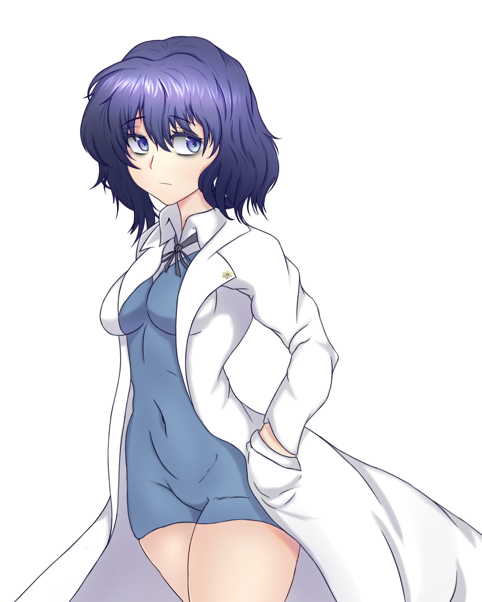
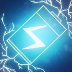
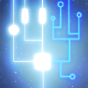
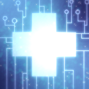

MERRY F. NEWGATE

Hard Work´s Results
Al iniciar la misión, Newgate añade 100 puntos totales al medidor de “exceso”, brinda 25 punto de “exceso” y 25% de generación adicional de puntos de “exceso”.

Ghost Member
Al iniciar la misión, Newgate añade 30 puntos totales al medidor de estabilidad.

Newgate's Will
Newgate sana los mechas y aliados en todo el mapa y les proporciona una generación adicional de puntos de habilidad del 50% durante 15 segundos. Esta habilidad puede ser activada cada 2 minutos.
La Familia Newgate ha destacado en los estudios de las Gateway en los últimos cien años, aportando información indispensable para poder hacer frente a las hordas. Líder del equipo de investigaciones Blue Bird centra sus esfuerzos en maximizar la eficiencia de extracción de recursos dentro y fuera del combate así como potenciar a los aliados con las anomalías independientes de cada Gateway. En términos de posicionamiento miento moral pertenece al grupo Legal Bueno.